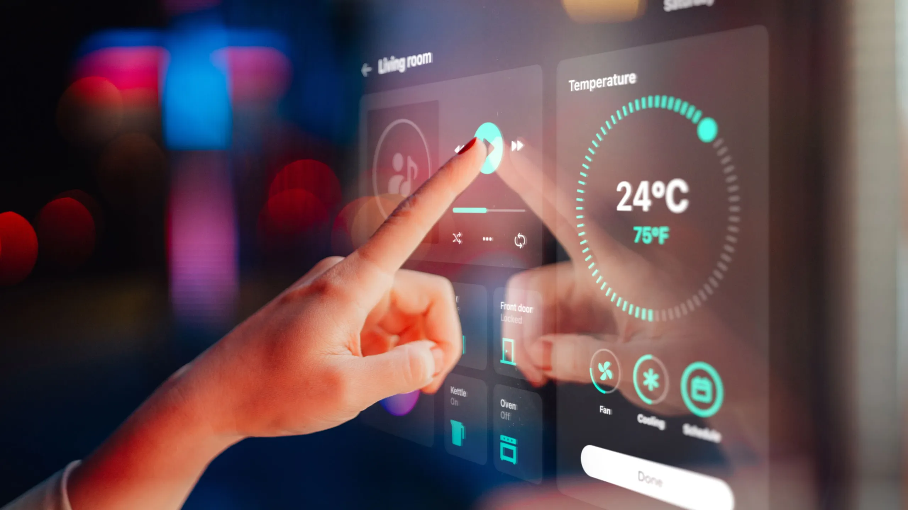

Bienvenido a la Página de Gadgets de hogar inteligente
Descubre cómo Gadgets mejora tu vida. conoce de nuestras características y beneficios a continuación.
Comprar AhoraCaracterísticas
- Conectividad
- Control remoto
- Automatizacion
- Compatibilidad y ecosistemas
- Seguridad
- Sensores
- Eficiencia energetica
Beneficios
| Beneficio | Descripción |
|---|---|
| Comodidad y Conveniencian | Control Remoto: Puedes controlar tus dispositivos desde cualquier lugar usando una aplicación móvil, lo que significa que puedes ajustar la temperatura, encender o apagar las luces, y verificar cámaras de seguridad sin estar en casa. Automatización: Programar dispositivos para que funcionen automáticamente según tus rutinas, como encender las luces al anochecer o ajustar el termostato cuando salgas de casa. |
| Seguridad Mejorada | Cámaras de Seguridad: Monitorean tu hogar en tiempo real y envían alertas en caso de actividad sospechosa. Sensores de Movimiento y Puerta: Detectan intrusiones y pueden activar alarmas o notificaciones instantáneamente. |
| Eficiencia Energética | Termostatos Inteligentes: Aprenden tus preferencias y ajustan automáticamente la temperatura para ahorrar energía sin sacrificar comodidad. Bombillas Inteligentes: Permiten ajustar el brillo y el color de las luces y programarlas para que se apaguen cuando no son necesarias. |
Testimonios de Clientes
"Desde que implementé gadgets de hogar inteligente en mi casa, la forma en que vivo ha cambiado drásticamente para mejor. Como ejecutiva de ventas, tengo un horario muy ocupado y viajo con frecuencia, por lo que la capacidad de controlar y monitorear mi hogar de manera remota ha sido una bendición. - Maria Lopez
"Como ingeniero de software, aprecio la tecnología y la automatización en todos los aspectos de mi vida. Los gadgets de hogar inteligente han transformado mi hogar en un espacio mucho más eficiente y cómodo. - Heber Carranza
"Como diseñadora gráfica que trabaja desde casa, la integración de gadgets de hogar inteligente ha mejorado mi entorno de trabajo y mi calidad de vida en general.-Audrina Lemus
Contacto
Para más información, por favor comunicate con nosotros en GadgetsIA@.com.